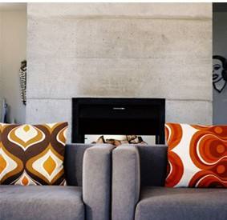
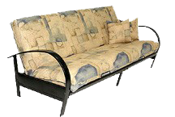
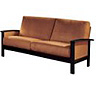

چطور رنگ مبل را با خانه هماهنگ کنیم؟
از رنگهای خنثی برای پایه شروع کنید و یک رنگ تاکیدی کنترلشده اضافه کنید.
راهنماهای کوتاه برای انتخاب بهتر و چیدمان هماهنگتر.

از رنگهای خنثی برای پایه شروع کنید و یک رنگ تاکیدی کنترلشده اضافه کنید.

ابعاد ورودی، اندازه اتاق، کاربرد، جنس و خدمات پس از فروش را بررسی کنید.

فرمهای سبک، پایههای ظریف و قطعات چندمنظوره میتوانند فضا را بازتر نشان دهند.